Explore San Antonio, TX
A Brief History
San Antonio grew from a Spanish mission and presidio on the San Antonio River in 1718. The Alamo, River Walk, and Spanish colonial missions record Tejano, Mexican, and Texan identities on the South Texas frontier. Mission trail bike routes and River Walk barges extend Spanish colonial landmarks along the San Antonio River. Walking routes through the historic centre help visitors relate these monuments to wider patterns of settlement and civic life in United States.
Attractions Map
Top Sights & Activities
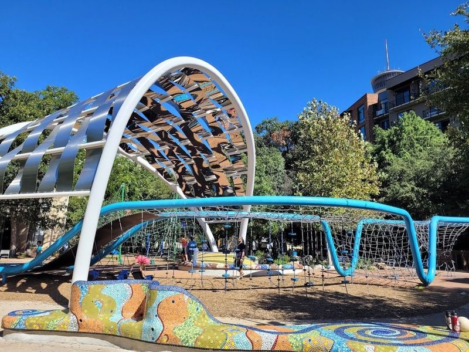
Hemisfair
Hemisfair is a 92-acre park in San Antonio, Texas, known for its Tower of the Americas and Institute of Texan Cultures. It was the site of the 1968 World's Fair and has since become one of the city's most popular parks. The Yanaguana Garden within Hemisfair features a playground suitable for all ages, making it a must-visit for families, pet owners, food enthusiasts, and anyone looking to relax or be active.
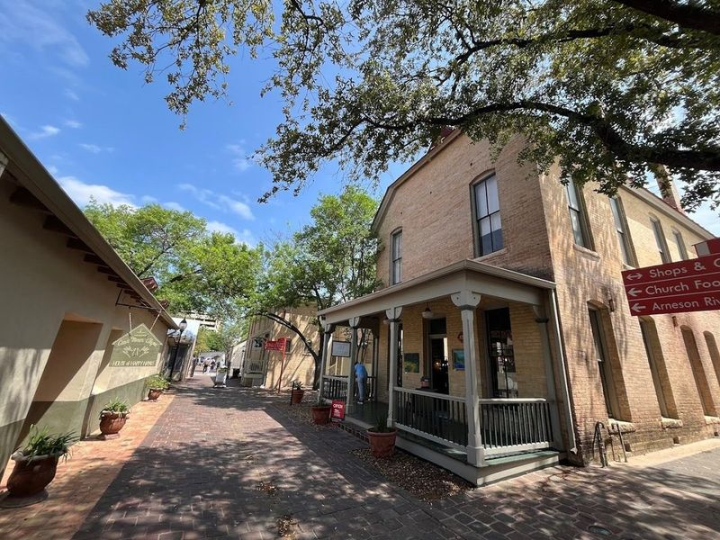
La Villita National Historic Village
La Villita Historic Village is a charming square-block enclave in San Antonio, listed on the National Registry of Historic Places. It's a bustling arts community with art galleries, craft stores, restaurants, and cafes along the south bank of the San Antonio River. Visitors can leisurely explore galleries and shops to find unique gifts reflecting the city's rich culture. The area also features landmarks like San Fernando Cathedral and The Majestic Theatre.
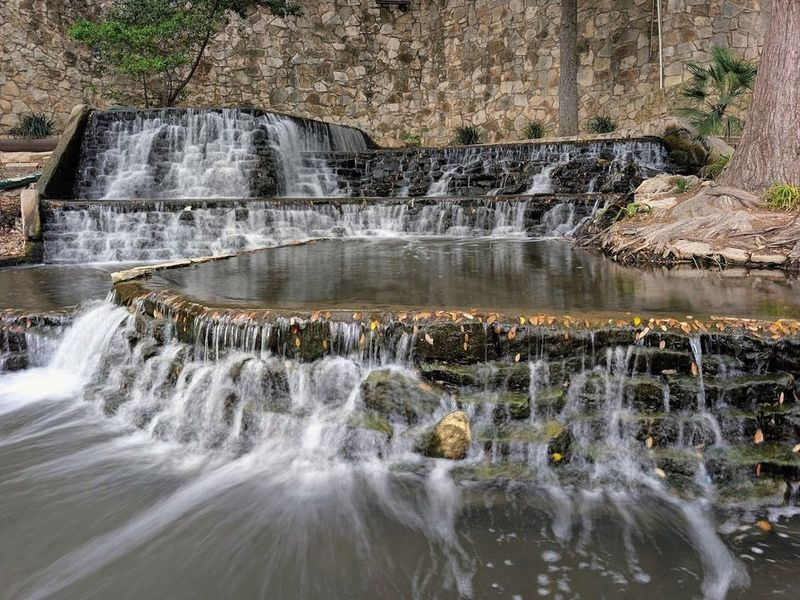
San Antonio River Walk
The San Antonio River Walk is a picturesque network of pathways, bridges, and lush greenery that winds through the city. It offers a chance to enjoy natural scenery and city views while providing access to top attractions, restaurants, hotels, and entertainment options. The pathway runs along the San Antonio River and includes The Museum Reach section with art installations and pedestrian access to cultural sites.
Sisters Grimm Ghost Tours & Oddities Parlor
Sisters Grimm Ghost Tours & Oddities Parlor is listed among principal sites for San Antonio within United States. Municipal and regional heritage listings document its place in the historic centre and travellers routes through San Antonio. Sisters Grimm Ghost Tours & Oddities Parlor is listed among principal sites for San Antonio within United States.
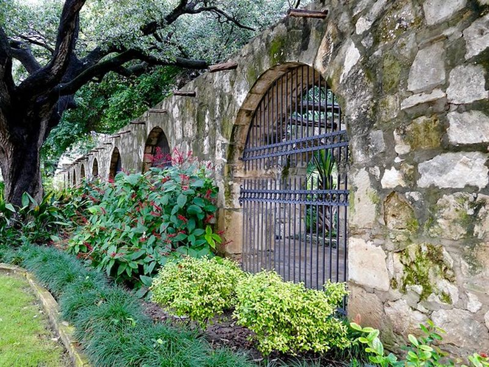
The Alamo
The Alamo is listed among principal sites for San Antonio within United States. Municipal and regional heritage listings document its place in the historic centre and travellers routes through San Antonio. The Alamo is listed among principal sites for San Antonio within United States.
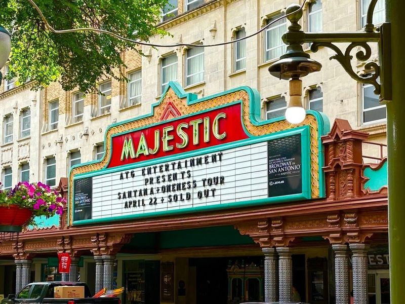
Majestic Theatre
The Majestic Theatre, a national landmark in downtown San Antonio, is renowned for its ornate Mediterranean-style architecture and rich cultural heritage. This historic gem, opened in 1929, boasts a lavish interior resembling a grand Spanish castle with intricate detailing and a ceiling reminiscent of a starry night. With the capacity to accommodate over 2,000 guests, it has become a popular venue for touring concerts, Broadway shows, live entertainment, comedy acts, and classic films.
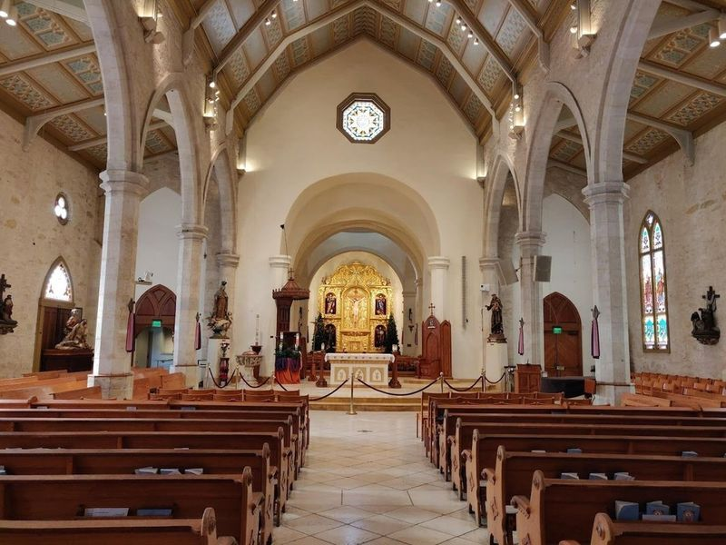
San Fernando Cathedral
San Fernando Cathedral, a historic church dating back to 1738, holds significant cultural and historical importance in San Antonio. The cathedral's impressive architecture reflects the city's diverse heritage, influenced by Spanish colonists, indigenous communities, and European immigrants. Visiting this landmark provides an opportunity to connect with San Antonio's rich history and make your trip more meaningful.
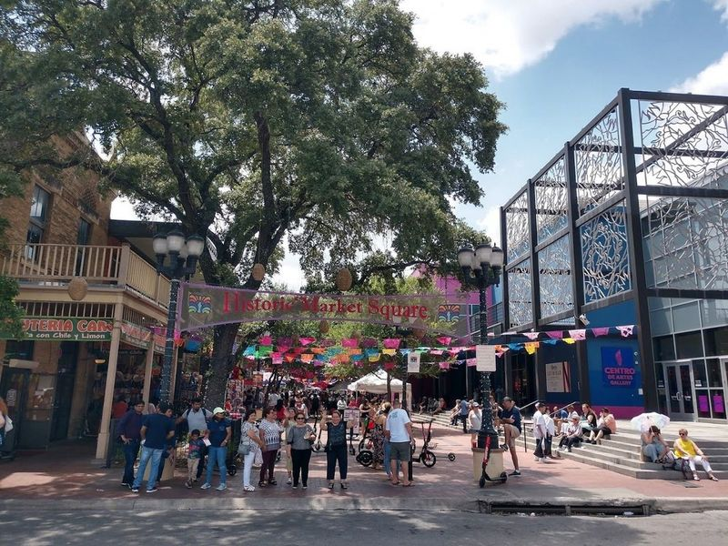
Historic Market Square
Historic Market Square, also known as El Mercado, is a Mexican shopping area located in Downtown San Antonio. Established in 1890, this three-block plaza is home to over 100 shops offering a wide variety of apparel, handcrafts, and delicious food options. Visitors can immerse themselves in the lively atmosphere while exploring authentic Mexican handicrafts and watching artists at work. The market also features a food hall with tempting Tex-Mex cuisine and live music from Mariachi bands.
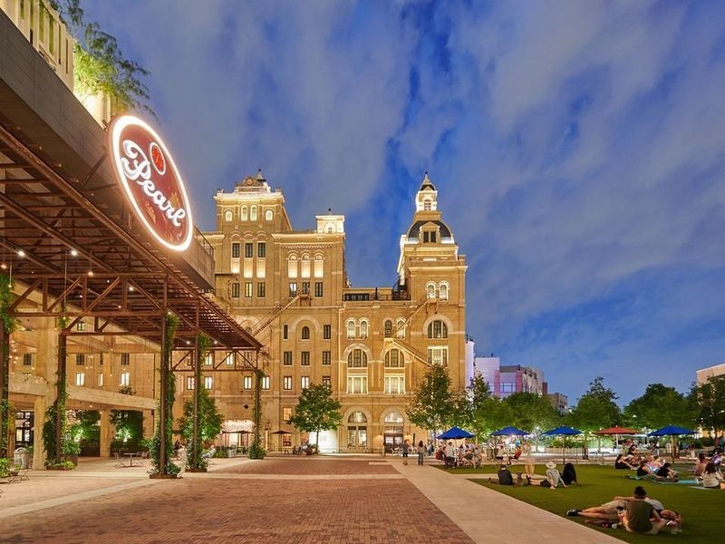
Pearl
Located in San Antonio, the Pearl Brewery is a historic complex that was once the headquarters of a brewing company. Now, it has been transformed into a community with shops, restaurants, and residences. The complex features beautiful yellow brick buildings, stables, and courtyards that have been restored and repurposed to house boutique shops and unique dining concepts. Visitors can enjoy a weekend market as one of its main attractions.
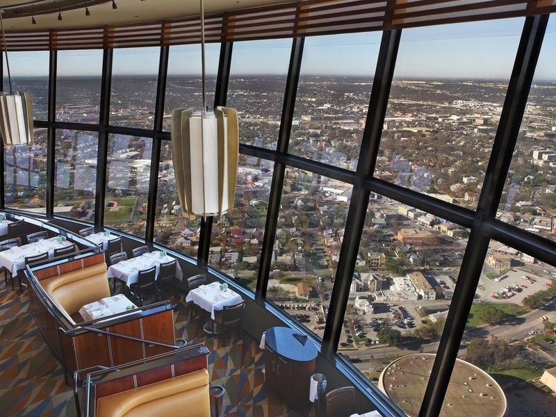
Tower of the Americas
The Tower of the Americas is a 750-foot landmark that proudly graces the San Antonio skyline. Originally built for the 1968 World's Fair, this architectural marvel draws inspiration from Seattle's Space Needle. Visitors can ascend to its observation deck for panoramic views of both the city and the picturesque Hill Country beyond.
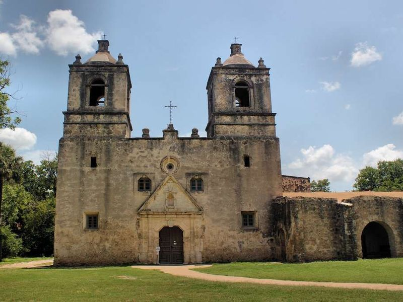
Mission Concepción
Mission Concepción, established in 1755, stands as America's oldest unrestored stone church and a significant Spanish Colonial landmark. It is the -preserved of San Antonio's missions and features a traditional cruciform floor plan. The restored interior floors showcase the church's once brightly colored exterior frescoes.
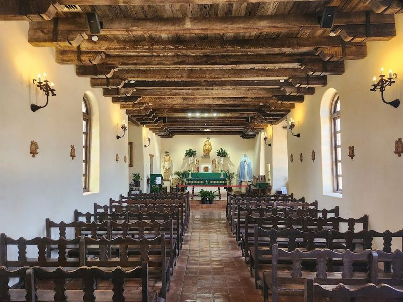
Mission Espada- San Antonio Missions National Historical Park
Mission Espada, part of the San Antonio Missions National Historical Park, is the oldest mission in Texas and a UNESCO World Heritage Site. Founded in 1690, it aimed to replicate Spanish life and taught Native Americans traditional farming techniques. Despite being the smallest of the five missions, it exudes charm with its partially destroyed exterior walls and well-preserved church. The grounds are clean and easily accessible, offering a glimpse into history amidst picturesque surroundings.
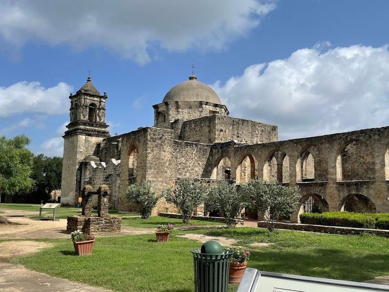
San Antonio Missions National Historical Park
San Antonio Missions National Historical Park is a captivating destination that spans 948 acres and showcases four remarkable colonial missions from the 1700s. This UNESCO World Heritage Site invites visitors to explore its rich tapestry of history, culture, and architecture through guided tours and scenic trails. The park features Mission Concepcion, Mission San Jose, Mission San Juan, and Mission Espada—each still functioning as active Catholic parishes offering regular services.
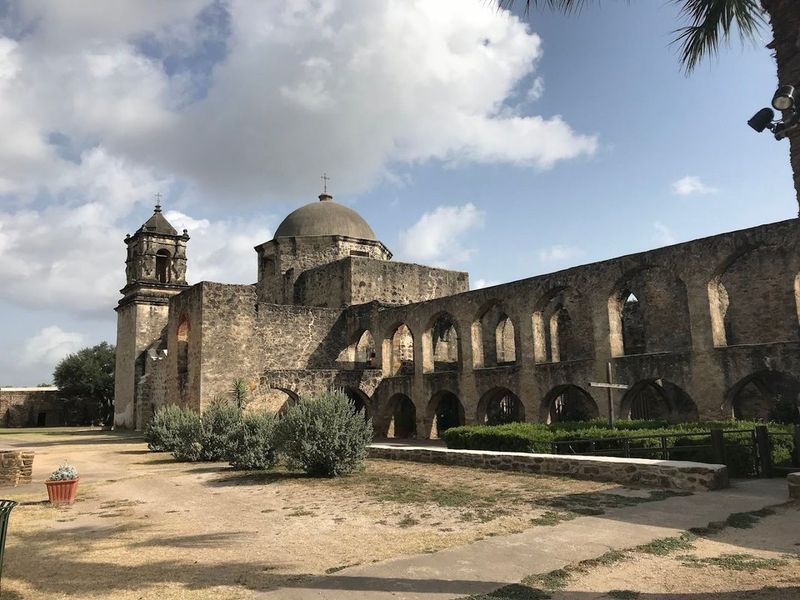
Mission San Juan
Mission San Juan, also known as Mission San Juan Capistrano, is a historic Spanish mission located along San Antonio's Mission Trail. Despite being abandoned earlier than other missions due to attacks from Apache tribes, it offers a serene glimpse into its early history. The site includes an unfinished 1780s church and ruins of various structures that are intriguing to explore.
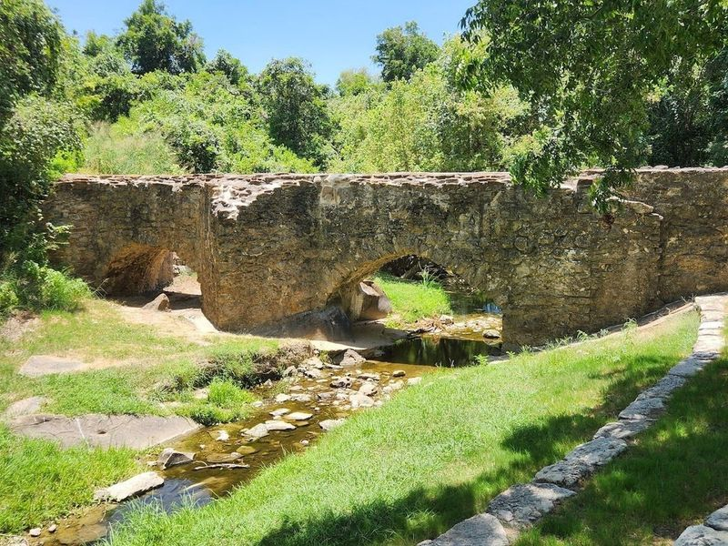
Espada Aqueduct
The Espada Aqueduct is a blend of history and engineering that captivates visitors with its remarkable architecture. Nestled amidst lush greenery, this historic site offers a serene escape where hear the gentle flow of water beneath it. While exploring, one might notice some litter in the river below, which detracts from its natural beauty.
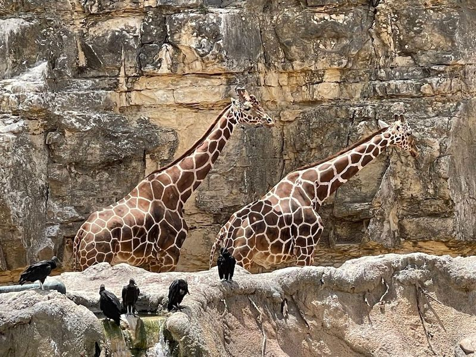
San Antonio Zoo
San Antonio Zoo is a sprawling 56-acre zoo located in an old limestone quarry on St Marys Street. It's home to over 9,000 animals from 779 species, including alligators and zebras. The zoo was one of the first in the country to be cageless, offering visitors a unique experience.
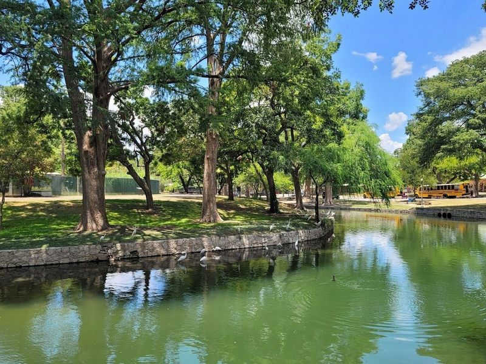
Brackenridge Park
Brackenridge Park, located near downtown San Antonio, is a historic riverside park with a rich history dating back to prehistoric times. The park features scenic trails, picnic areas, athletic fields, and play areas nestled among Live Oak trees. Visitors can enjoy the picturesque Brackenridge Park Bridge, originally built in 1890 and relocated to the park after being damaged by a flood.
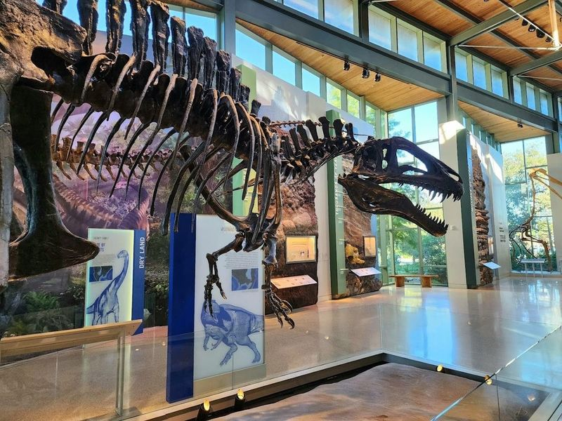
Witte Museum
The Witte Museum in San Antonio offers a diverse range of exhibits that cater to visitors of all ages. The museum features long-term displays on natural history, art, and Texas heritage, as well as a Science Treehouse for interactive learning experiences. The facility is designed with sustainability in mind and includes six permanent interactive centers for play and learning.
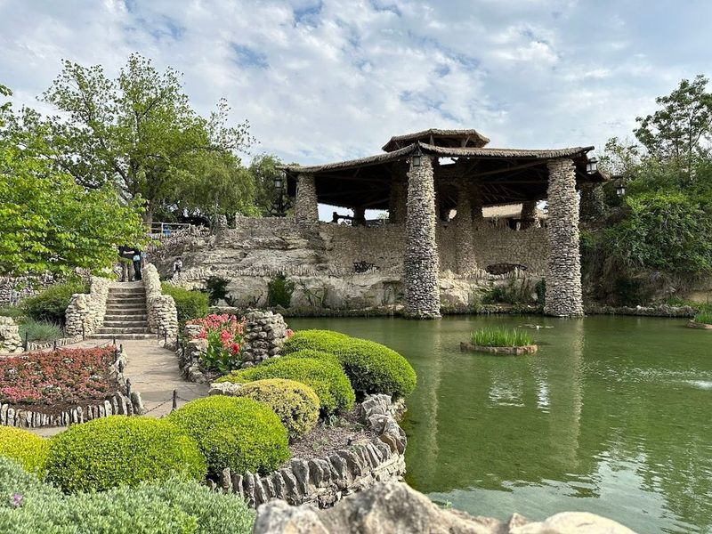
Japanese Tea Garden
The Japanese Tea Garden, located within San Antonio's expansive Brackenridge Park, is a picturesque attraction that dates back to 1901. Originally developed on donated land from an abandoned quarry, the garden features a array of Japanese-inspired elements such as stone bridges, a pagoda, koi ponds, and a captivating 60-foot waterfall. This historic site has been meticulously renovated and is now open to the public year-round.
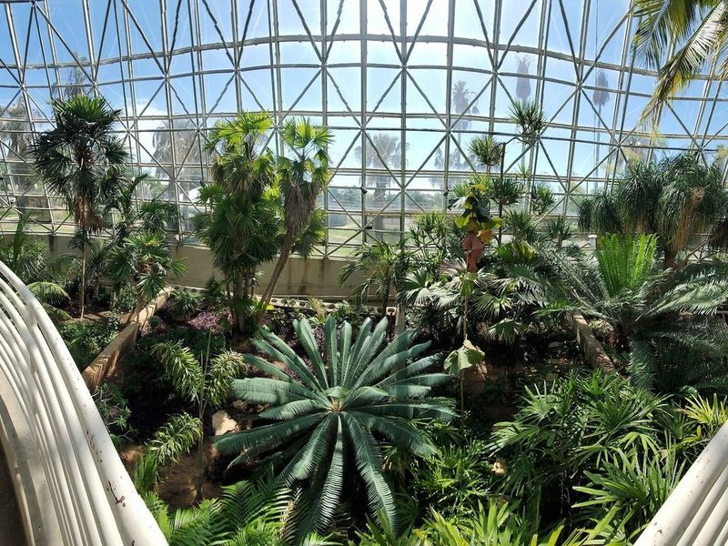
San Antonio Botanical Garden
San Antonio Botanical Garden is a 38-acre scenic area featuring various collections and exhibit areas, including formal and seasonal display gardens such as the rose garden, sensory garden, water-saving garden, and Kumamoto En Japanese Garden. The Lucile Halsell Conservatory offers a futuristic experience with an underground tunnel leading to the Palm House. Visitors can also explore the 11-acre Texas Native Trail and enjoy guided tours, bird-watching walks, lectures, and other events.
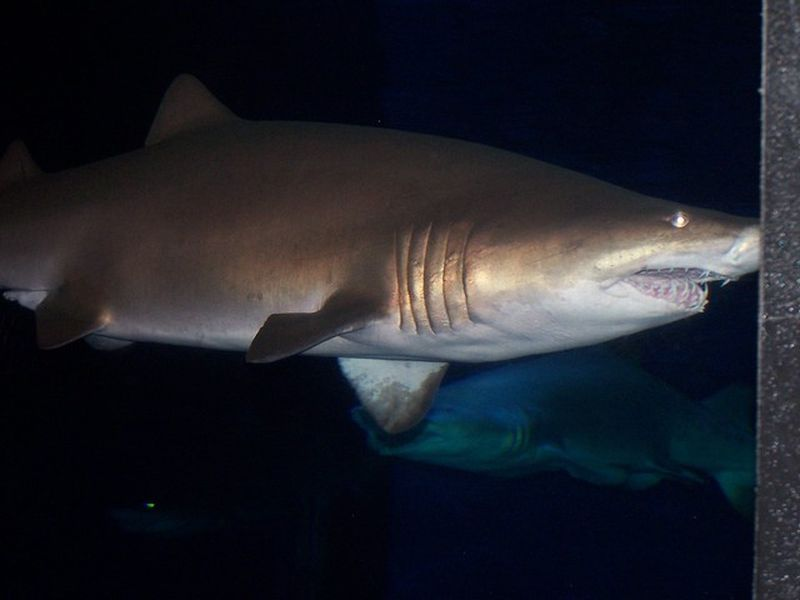
San Antonio Aquarium
San Antonio Aquarium is listed among principal sites for San Antonio within United States. Municipal and regional heritage listings document its place in the historic centre and travellers routes through San Antonio. San Antonio Aquarium is listed among principal sites for San Antonio within United States.